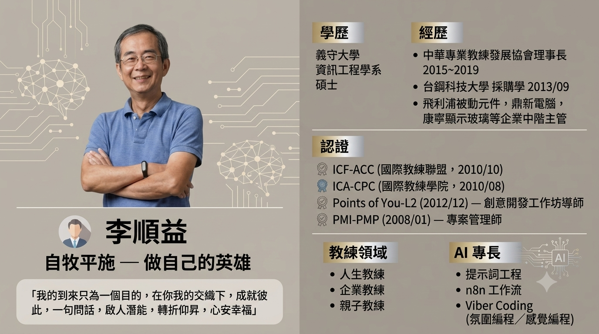

自牧平施 核心教練領域
以專業問話、同理傾聽與系統化方法，引導你發現內在力量。
人生教練 (Life Coaching)
陪伴你釐清人生方向、突破心靈迷惘與迷茫，重新連結內在渴望，活出心安幸福的生命狀態。
企業教練 (Executive Coaching)
結合 PMP 專案管理框架與高階對話，協助企業經理人與團隊轉化思維、優化溝通與提升領導影響力。
親子教練 (Parent-Child)
導入非暴力溝通 (NVC) 與深度對話技巧，搭起父母與孩子心與心的橋樑，建立品質優良的家庭關係。
知識 庫
持續累積的專業知識與實踐筆記。
非暴力溝通
NVC 方法論與實踐筆記，學習以觀察、感受、需要、請求四步驟建立深度連結。
溝通 · NVC教練技術
ICF 核心能力與教練模型，系統化學習專業教練的提問、聆聽與回饋技巧。
ICF · 核心能力命理研究
易經、紫微斗數與八字命理，結合現代心理學的東西方對話哲學探索。
易經 · 紫微 · 八字AI 應用
提示詞工程、n8n 工作流與智能體設計，將 AI 融入教練與教學場景。
提示詞 · 智能體 · 工作流知識庫內容持續整理中，敬請期待更豐富的上線內容
5 大主打 課程與工作坊
精心設計的成長旅程，為不同階段的你提供最適切的啟發與陪伴。
教練家教班
一年深度陪伴Sunny 最重視的旗艦養成計劃。長達 365 天的高品質個別諮詢、家教式指導與社群陪伴，鍛鍊終身受用的教練心法與洞察力。
- 1 對 1 個別深度教練對話
- 全年持續成長軌跡追蹤
- 系統化思維與案例實演
讓你的對話更有品質
高品質溝通工作坊對話是關係的基石。透過專業問話技巧與非暴力溝通，擺脫無效爭執，創造深層理解與高質感的雙向互動。
- 同理傾聽與精準提問
- 解除防禦性對話模式
設計你的小習慣
習慣養成實踐課改變不需要咬牙苦撐。運用微習慣設計原理，將目標拆解為輕鬆可行的每日行動，輕鬆堆疊可持續的改變。
- 微習慣系統構建
- 克服拖延與意志力耗竭
人生設計課
生涯與生命規劃結合 Stanford 設計思考 (Design Thinking) 與生命教練工具，重新審視職業、健康、娛樂與關係，打造專屬人生藍圖。
- 生命儀表板量測
- 多重原型人生測試
喝杯茶面對人生小議題
圖像對話 + POY 牌卡體驗運用國際 Points of You (POY) 圖像卡牌工具，在輕鬆奉茶的溫暖氛圍中，用直覺圖像打開盲點，溫柔解開生活結扣。
- 國際 POY-L2 工具應用
- 圖像聯想與潛意識對話
工具 集
實用的 AI 輔助工具，讓你的學習與練習更高效。
專業認證 & 經歷里程碑
結合跨領域背景與國際認證，積累豐富的生命引導經驗。
中華專業教練發展協會 理事長
推動台灣專業教練發展
帶領協會推廣教練文化，舉辦多場專業論壇與工作坊，促進國際教練標準在在地落地與應用。
取得專業國際教練雙認證
ICF-ACC ＆ ICA-CPC & POY-L2
通過 ICF 國際教練聯盟 (ACC) 與 ICA 國際教練學院 (CPC) 認證，並完成 Points of You 創意開發工具 Level 2 授證。
PMI-PMP 國際專案管理師認證
Project Management Professional
具備嚴謹的專案規劃、範疇管理與風險控管能力，將系統化專案邏輯融合於企業與個人教練輔導中。
企業中階主管經驗
飛利浦被動元件 · 鼎新電腦 · 康寧顯示玻璃
歷任企業採購與物料規劃管理，累積深厚的跨部門協調與系統化思維能力。後投入教練與助人領域，將管理實戰轉化為陪伴力量。
義守大學 資訊工程研究所 碩士
資訊工程 · 跨界融合
資工碩士背景，早年曾以 Basic 開發進銷存系統販售。技術思維與人文關懷的跨界融合，成為教練事業的獨特優勢。

關於 Sunny 的全方位簡介
融合人生、企業、親子教練，多元課程與工具認證，陪伴無數學員找到心中的英雄。
創新增能 & 探索方向
結合現代 AI 科技與東西方智慧，賦能更高質感的對話體驗。
🤖 AI 對話練習智能體
成功研發並實測「NVC 非暴力溝通 父子版 AI 練習智能體」，讓學員在與 AI 互動模擬中，無壓力練習同理傾聽與表達。
🎓 深度學習社群平台
持續建置線上學習共學平台，提供高品質線上教室、即時圖像互動與課後沉浸式討論。
☯️ 東西方對話哲學
深入研究易經、紫微與八字等東方傳統哲學，將其與西方現代心理學及教練提問工具做深度的對話整合。
開啟專屬的 英雄對話
不論您想了解課程、預約一對一諮詢，或邀請工作坊合作，都歡迎隨時與 Sunny 聯繫！